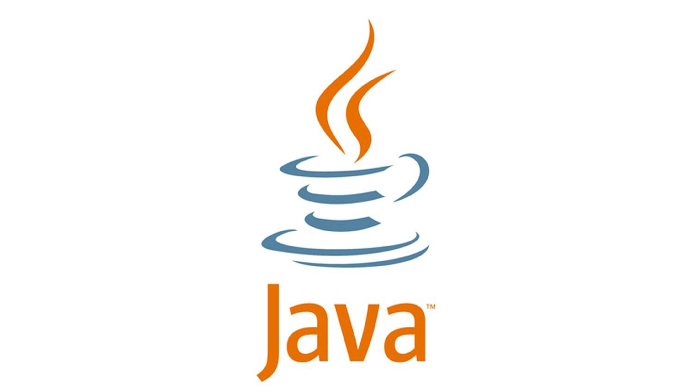

ИЗОБРЕТЕНИЯ
8 октября 2025
Java — это популярный, объектно-ориентированный, кроссплатформенный язык программирования общего назначения, разработанный Sun Microsystems (сейчас Oracle). Ключевой особенностью Java является принцип "Напиши один раз, запускай где угодно" (WORA), благодаря которому программы на Java могут работать на различных устройствах и платформах благодаря виртуальной машине Java (JVM). Язык используется для создания мобильных приложений (особенно для Android), корпоративного ПО, серверных приложений, веб-приложений и многого другого.
Java используют, когда нужен надёжный и проверенный временем язык программирования. Например, в банковском приложении. Даже для небольшого банка сделать функцию перевода, оплаты картой и отображения баланса — большая работа. Пока клиент четыре раза тапает по экрану, сервер обрабатывает десять тысяч строк кода на Java. Но это не значит, что Java нужен только для банков: на нём можно делать Android-приложения, программы для ПК и многое другое.
3I/ATLAS или C/2025 N1 (ATLAS) (предварительное обозначение A11pl3Z) — межзвёздный объект[1][2][3][4] с кометными свойствами[5], который 29 октября 2025 года сблизился с Солнцем[6] до расстояния 1,356 а.е.[2] Объект обладает самым большим эксцентриситетом орбиты из всех открытых межзвёздных объектов (6,137 против 1,2 и 3 у Оумуамуа и у кометы Борисова соответственно)[3][7]. Максимальное сближение с Землёй ожидается 19 декабря 2025 года 05:33:37.982 (UTC), расстояние до неё составит 269,0337 ± 0,1906 млн км. или 1,79838 ± 0,0013 а.е.[8]